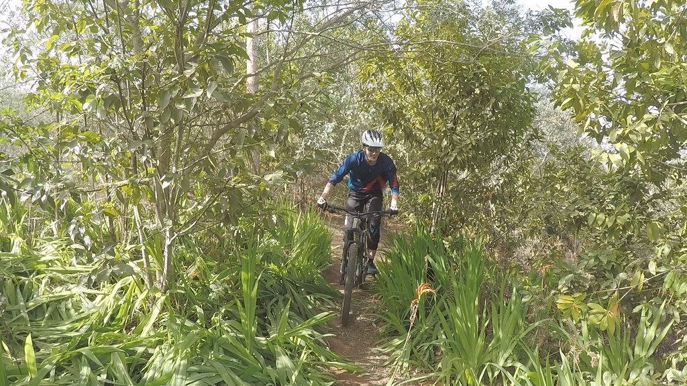
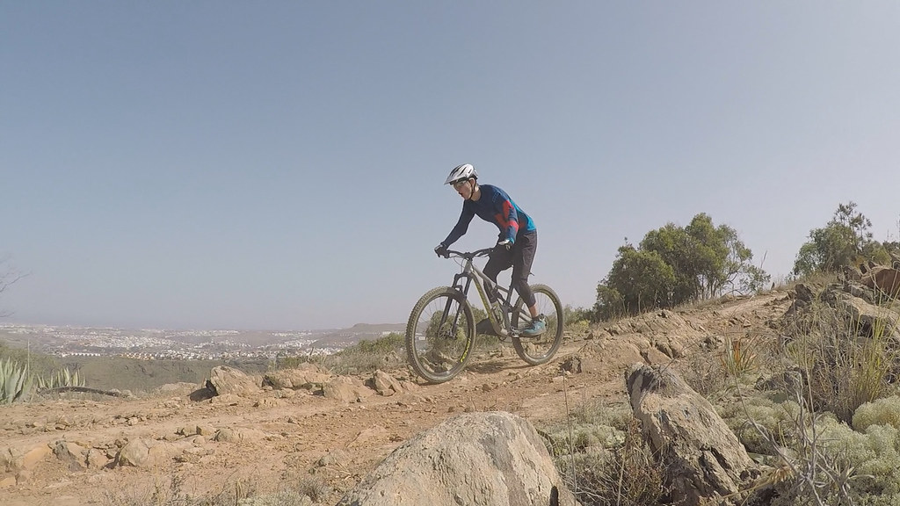
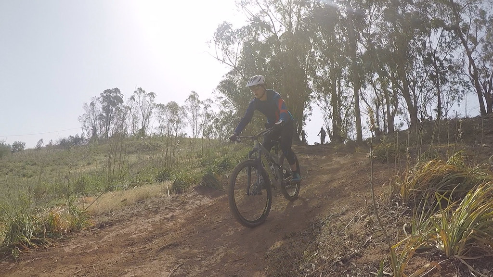

Über mich:

Hi!
Ich bin Niklas, 23 Jahre alt und komme ursprünglich aus der Nähe von Karlsruhe, momentan wohne ich
jedoch in
Furtwangen.
In meiner Freizeit gehe ich gerne Mountainbiken (beispielsweise hier auf Gran
Canaria),
Bouldern und
höre sehr viel
Musik.
Mein Studium:
Wie bereits erwähnt, wohne ich momentan in Furtwangen und studiere dort OnlineMedien im zweiten
Semester.
Dafür habe ich mich entschieden, da ich mich sowohl für Informatik, als auch Medienproduktion
interessiere.
Mountainbike Bilder:
  